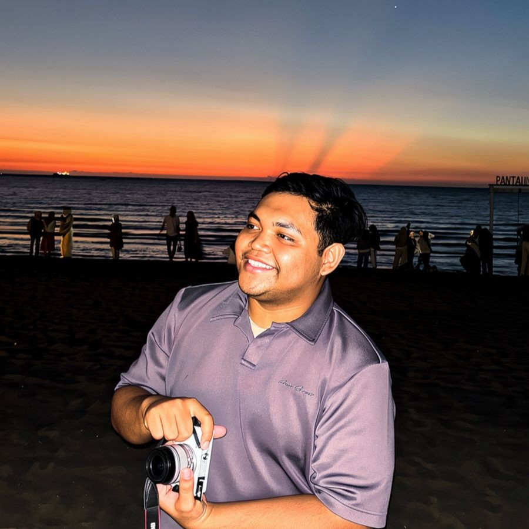

Saya adalah Ariel Usman, seorang kreator konten dan pembelajar mandiri yang memadukan dunia pemrograman, sains, pengembangan kepribadian, dan simulasi interaktif.

Eksplorasi simulator interaktif dan karya pemrograman yang dapat langsung dijalankan.
Pengalaman eksplorasi antarmuka digital futuristik minimalis dengan skema warna hijau terminal retro.
Buka Live PreviewGaleri pameran lukisan dan kreasi grafis digital interaktif yang tersaji secara elegan.
Buka Live PreviewMainkan alat musik Kalimba virtual interaktif secara langsung dari peramban web dengan penunjuk not balok.
Buka Live PreviewUlasan pemikiran mandiri Ariel mengenai psikologi, sosiologi modern, dan dinamika teknologi.
Esai kritis mengenai miskonsepsi kecerdasan emosional dan fenomena pseudosains membaca pikiran orang lain di masyarakat.
Analisis semi-humor berdasar pendekatan sosiologi dan ekonomi mengenai waktu pernikahan ideal di era modern.
Bedah tuntas dampak kecanduan stimulasi video pendek (TikTok/Reels) pada sirkuit dopamin otak manusia.
Selain karya pemrograman dan kepenulisan, Ariel juga aktif membantu kebutuhan branding digital, pengelolaan platform media, dan integrasi aset kreatif untuk berbagai klien.
Direktori tautan resmi personal branding Ariel Usman yang terpusat melalui Linktree resmi.
Hubungkan LinktreePemberian konsultasi manajemen media sosial kreatif dan publikasi independen interaktif.
Kunjungi Profil Instagram